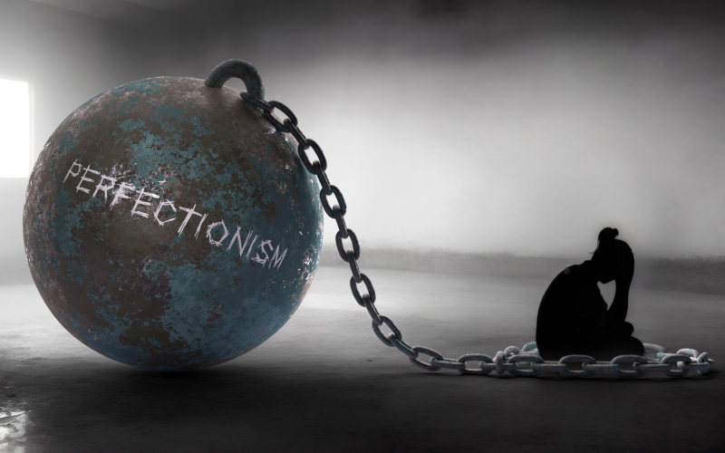

Monsters
October 02, 2023 by Esahtengang Asonganyi
Something I'm scared of? Oh, I suppose monsters. There are many types of monsters in this world,
monsters who will not show themselves and will cause trouble, monsters who abduct children, monsters
who devour dreams, monsters who suck blood, and monsters who always tell lies. Lying monsters are a
real nuisance, they are much more conning than other monsters. They pose as humans even though they
have no understanding of the human heart. They eat even though they've never experienced hunger.
They study even though they have no interest in academics. They seek friendship even though they
do not know how to love. If I were to encounter such a monster, I would likely be eaten by it,
because in truth, I am that monster.
Yet, perhaps there is hope even for a monster like me. For in acknowledging my own capacity for
deception and superficiality, I can strive to change. The very awareness of these monstrous traits
within me can serve as a catalyst for self-improvement. It is through self-reflection and a sincere
desire to understand the human heart that I may begin to shed the monstrous facade and reveal the
potential for genuine connection and empathy that lies beneath. So, in my fear of monsters, I
paradoxically find a path towards becoming more truly human.
Perfection
October 02, 2023 by Esahtengang Asonganyi

In this world, nothing perfect exists. It may be a cliché after all, but it's the way things are.
That is precisely why ordinary men pursue the concept of perfection, its infatuation. But,
ultimately, I have to ask myself, what is the true meaning of being perfect? And the answer I came
up with was nothing. Not one thing. The truth of the matter is I despise perfection. If something
is truly perfect, "that's it." The bottom line becomes that there is no room for imagination, no
space for intelligence or ability or improvement. To men of science like me, perfection is a dead
end, a condition of hopelessness. Always strive to be better than anything that came before you,
but not perfect.
So, let us embrace the beauty of imperfection, for it is in our flaws and the endless pursuit of
improvement that the essence of progress and innovation resides. In the imperfections, we find the
space to grow, the freedom to dream, and the endless opportunity to push the boundaries of what is
possible. Imperfection is the canvas upon which our greatest achievements are painted, and it is in
this ongoing journey towards betterment that we discover the true meaning of our existence.
.jpg)